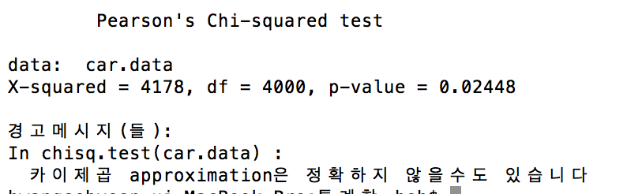

[13주차][2016004011][황세현]
통계학실습
소프트웨어 융합대학 컴퓨터 전공
황세현(
2016004011
)
가설:
차의 Price와 Length는 연관이 있다.

#! /usr/bin/env Rscript library(MASS); summary(Cars93); car.data = table(Cars93$Price, Cars93$Length); chisq.test(car.data);
결과를 보면, p-value가 0.0248으로 0.05보다 작다.
p-value가 0.05보다 작은 경우, 귀무가설을 기각할 수 있다.
따라서 차의 Price와 Length는 연관이 있다.